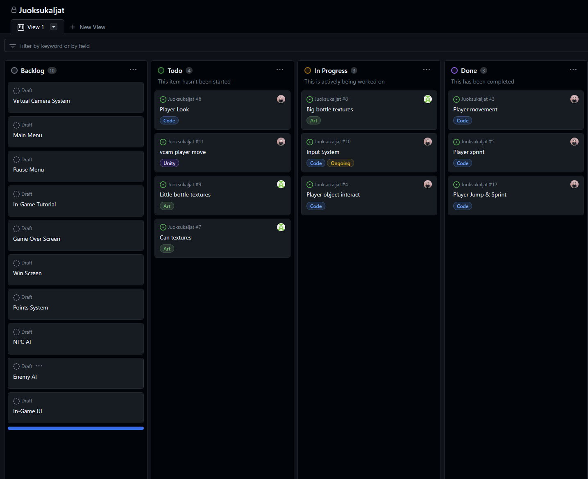
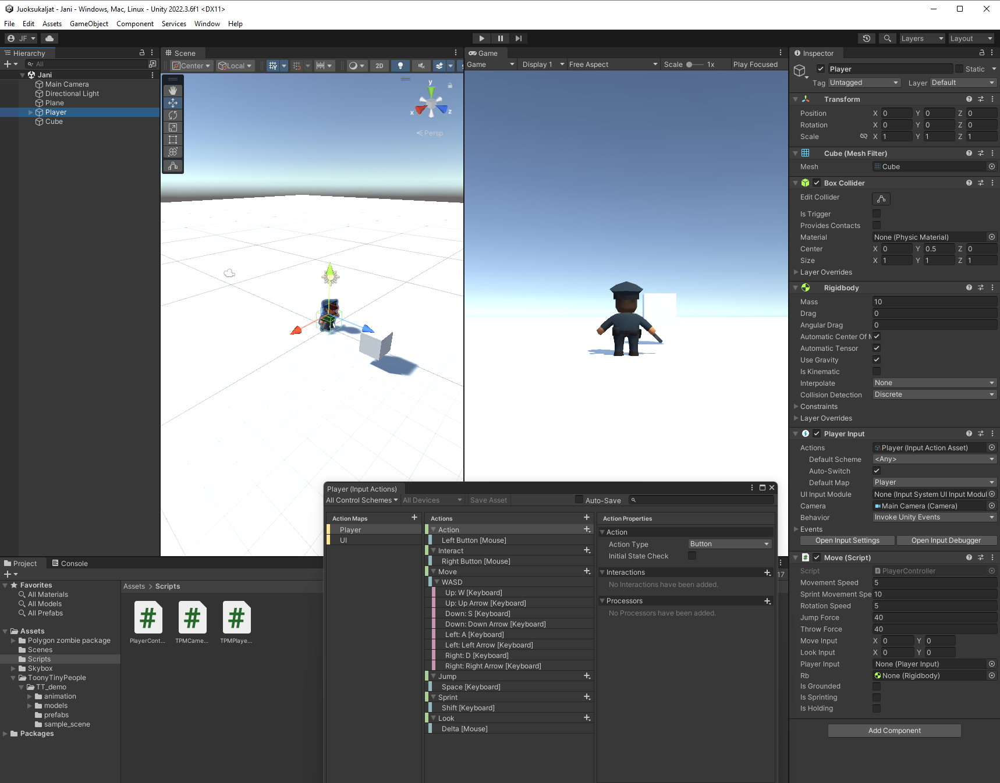

Jani
Jocke
Teemu
Tomi
We used github as our version control and project management.

The game controls testing scene open in the Unity editor. I applied simple movement implementing the Unity input system.

Juoksukaljat was a game project which was intended to be released in the December 2023 Xamk Gamelab Demoday event. Our team members were Tomi, Jocke, Teemu and myself. We had worked together on the Spring '23 game project and wanted to continue working together on this project since our Spring project Cubic Wars was deemed a tremendous success among peers and play testers. Juoksukaljat was intended to be a first person loot and run stealth game in which the player takes the role of either a shoplifter trying to steal alcoholic beverages from a local market, or the store's security guard whose job is to catch these perpetrators.
I was involved in assigning the controls to the player character using Unity's innput system method, which we had just learned in a separate course. I made scripts for the game controls including basic movement, sprinting, jumping, interacting with objects and various actions. My next step would have been to start working on the game's UI and menu systems.
In the midst of our study semester, our dev team decided to start a company and so we put this game project on the shelf, so to speak, inn order to focus on the company. We may return to the idea of this project at some undetermined time in the future, but it would be using a different game engine and slightly different methods.